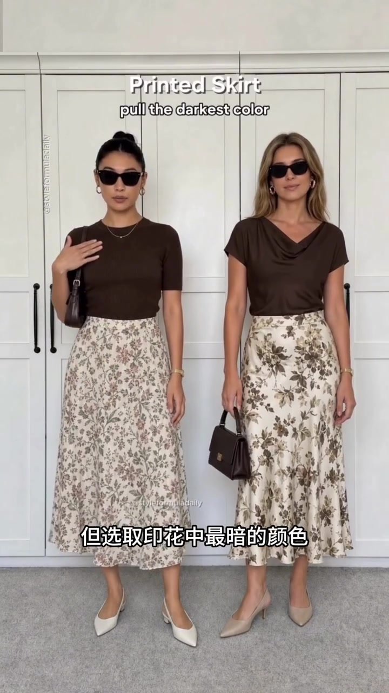
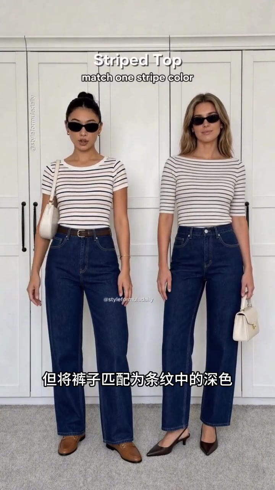
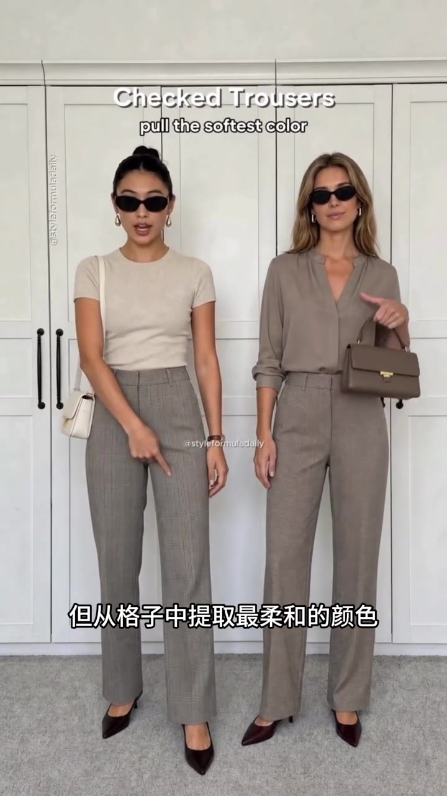
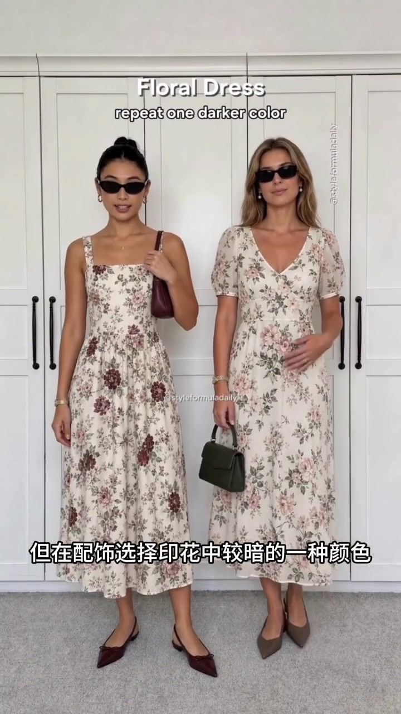

同一个机位，先看“安全”，再看“有意”
视频里两位模特始终并排站在白色衣柜前。每一组先出现容易想到的组合：印花配白、条纹配牛仔、格纹配黑、碎花裙配中性配饰；随后衣服或配件切换成图案中已经存在的颜色。
视频真正反复演示的不是某个固定色号，而是一个动作：观察图案，取出其中一色，再在上装、下装或配件中重复。以下按四组换装的先后展开。
示范 01 · 00:00–00:07
印花半裙：白上衣能穿，深棕呼应更明确
开场是浅底印花半裙。画面先让两人搭白色上衣，证明这是不会突兀的基础选项；几秒后，上衣和手袋换成从裙子花纹里抽出的深棕色。裙装没有变化，整体却多出一条可被看见的颜色联系。
原声：“Remember a printed skirt with white looks good, but pull the darkest color from the print, and it looks more intentional.”

示范 02 · 00:07–00:14
条纹上衣：牛仔裤从浅蓝换到条纹深色
第二组保留横条纹上衣，先配常见的浅色牛仔裤。随后裤装改成深靛蓝，更接近上衣条纹中的深色；鞋和腰带也延续棕色小面积点缀。变化仍然不靠增加新颜色，而靠让下装和条纹建立对应。
原声：“A striped top with denim works well, but match the bottom to one stripe color, and it feels more pulled together.”

示范 03 · 00:14–00:20
格纹长裤：不只配黑，也能提取柔和灰褐
格纹裤先与黑色上衣、黑包和黑鞋同框，这组对比清楚，也容易复用。随后上装与手袋转为米灰、灰褐等更柔和的颜色，取色目标也从“最深”改成格纹中的“最柔和”。
原声：“Checked trousers with black look good, but pull the softest color from the check, and they look more polished.”

示范 04 · 00:20–00:28
碎花连衣裙：中性配件之外，再重复一个深色花纹
最后是两条浅底碎花连衣裙。先搭米白、裸色等中性鞋包，随后配饰换成酒红、深绿、棕灰等裙身已有的较深颜色。配件面积很小，却把视线从鞋包重新带回花纹。
原声：“A floral dress with neutral accessories works well, but repeat one darker print color in the accessories, and it feels more refined.”

28 秒里，公式其实只有一步
先穿一组不出错的基础搭配，再从印花、条纹或格纹中挑一个已有颜色，让它在另一件单品上出现。视频展示了四个视觉样例，但没有讨论肤色、材质、场合或其他配色，因此“万能”更适合理解为试穿起点，而不是唯一答案。